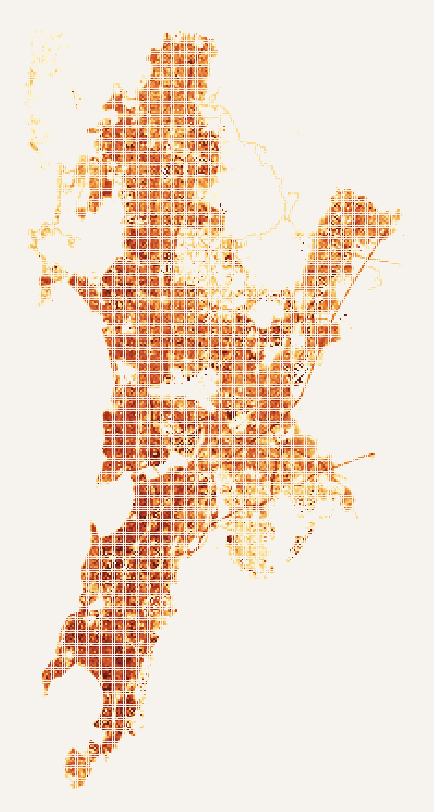

Every air conditioner moves heat from inside a building to the street.
As Mumbai's households buy them, the city's waste heat rises — and the households least able to afford cooling live in the dwellings that get hottest. This model quantifies both halves of that sentence for all 580,890 buildings.
580,890 buildings, one 100 m grid.
Footprints and heights become a stock of typed archetypes — towers, mid-rise, low-rise, informal dwellings, offices, shops. Each carries an appliance load and a cooling load driven by outdoor temperature, and each rejects its waste heat to the street.
Add human metabolism and road traffic, aggregate to 100 m cells, and you get Qf: anthropogenic heat, hour by hour. Before dawn the city idles.
SGNP, Aarey and the creeks are dark because no buildings sit there.
Mumbai's waste heat doesn't peak in the afternoon. It peaks at 18:00.
Scroll, and the map runs through a typical pre-monsoon day. Heat climbs roughly fivefold from the pre-dawn low to the evening peak.
The city-scale magnitude checks out: 20.58 W/m² over built cells, against 23.5 W/m² from the published extrapolation for Mumbai (Sailor et al. 2015). The shape does not — and that two-hour gap is the substantive result. The benchmark's diurnal profile comes from US utility load curves; Indian residential demand peaks in the evening.
Households are agents. Each year, every household without an AC decides whether to buy one — from what it can afford, how hot its own dwelling gets, and how many neighbours already have one. Owners choose a setpoint and how long to run it.
Penetration is an output, not a target: it roughly triples by 2040, with no population growth and no new construction.
Where the new heat lands.
The map now shows only what adoption adds: 2040 minus 2026, same hour, same buildings.
It is not spread evenly. At the evening peak the median mapped cell gains 4 W/m²; one in ten gains 15 or more, and that tenth takes about 39% of all the heat added.
Cell statistics recomputed from the published tiles (27,935 cells, hour ending 18:00).
Every cell, every hour, every model year.
The full map lets you drag through the day, run the adoption model, and open any 100 m cell for its values across all four years.
Open the mapThermal inequality is measurable, and it runs the wrong way.
Adoption is driven by discomfort, and discomfort is felt indoors. A single-capacitance model gives each building its own free-running indoor temperature — and an uninsulated low roof over a small dwelling behaves nothing like a tower flat.
Show as a table
| archetype | indoor mean °C | indoor max °C | discomfort Kh | setpoint °C | runtime |
|---|
Two mechanisms produce the gap: an uninsulated low roof over a small dwelling — 45 W/m² of roof gain and 3 air changes an hour — and a household that cannot afford to run a machine it may not own.
42.2% of buildings are slum-flagged: median footprint 42 m² and height 3.6 m, against 79 m² and 5.2 m elsewhere. Only 0.8% exceed three floors.
The heat they are exposed to outdoors is produced largely by other people's machines. Private benefit, shared cost — that asymmetry is what the model exists to quantify.
Two models, coupled — and a loop that makes it an agent-based model, not a projection.
A bottom-up urban building energy model feeds an agent-based model of who buys an air conditioner. Their waste heat raises the city's temperature, which raises next year's discomfort. Step the loop, or pick any stage.
Income and price decide who adopts. Building fabric decides who suffers while not adopting.
Morris screening (r = 2, 18 evaluations) ranks each parameter by μ*, the mean absolute elementary effect on an output. Switch outputs and watch the ranking reorder.
The answer is set by the two parameters with no empirical anchor. p_cap, the annual purchase-hazard ceiling, and b0, baseline propensity, dominate every output. They are calibration knobs, not measured quantities — which is what makes this a prototype, and says exactly where to spend effort next.
Discomfort ranks second-last for adoption yet produces the largest spread across the stock. feedback_k is last for adoption and second for ΔT: the feedback is visible in the physics and invisible in the behaviour. And seeds don't matter — across replicates 2040 penetration varies by under 0.1 percentage points; with 3.2 million households, binomial noise averages out. The uncertainty lives in the coefficients.
Structural, not predictive. Read the trajectories that way.
The building physics and the agent logic are real; the behavioural coefficients are not fitted to observation, and the two that dominate the result have no empirical anchor. The shape — who adopts first, where waste heat concentrates, how fabric and income interact — is far more robust than the level.
- Behavioural coefficients are unfitted. Calibration targets: AC ownership by income band (CEEW IRES, Maharashtra), room-AC sales trends, licensee summer load growth.
- ΔT is a uniform city-mean increment. Real AC waste heat concentrates at night and in dense wards (0.6–1.5 °C night-time in the literature). Replace
kwith SUEWS or PALM-4U per LCZ. - Heights carry 1.5–9 m error, propagating into floors, floor area and capacitance.
- Typology is ~35% evidence-supported; the rest is a size-and-height heuristic.
- EUIs, appliance stocks, U-values, ACH, capacitance and roof gains are placeholders. No Indian archetype library is used.
- The slum layer is 2016 and sets archetype, thermal properties and income band at once.
- The income proxy is land value, not income; the slum override handles the worst failure.
- COP is fixed at 3.0, so cooling energy and waste heat are understated on the hottest hours.
- All condenser heat is treated as sensible; commercial cooling towers reject mostly latent heat.
- Vehicle heat rests on one invented number — city daily vehicle-km — yet is a large share of Qf.
- One spliced weather series (station era only) means no urban heat island gradient: every ward gets identical forcing.
- The stock is frozen to 2040: no redevelopment, no new construction, no population growth.
- No daytime population redistribution: metabolic heat stays at home, understating BKC, Nariman Point and Lower Parel by day.
Open the city cell by cell.
Hourly anthropogenic heat on a 100 m grid for four snapshot years of the adoption model. Drag through the day, run the model from 2026 to 2040, and click any cell for its value across every year.
Open the full map
The whole pipeline — data assembly, energy model, thermal model, ABM, sensitivity screening, web map — was built in a single session on 19 September 2026, then paused for documentation. Reproduce has the commands; every log line carries the config hash, so any number traces back to the parameters that produced it.